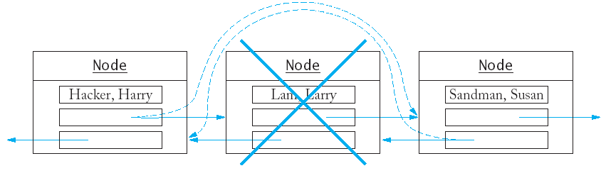

Реализация на свързани списъци - класове, итератори,
операции.
Реализация на свързани списъци - класове, итератори,
операции.
* Ще реализираме свързан списък с елементи - низове.
* Всеки връх на списъка съдържа низ и два указателя - адреси на
предишен и следващ връх на свързания списък.
class Node {
public:
Node(string s);
private:
string data;
Node* previous;
Node* next;
friend class List;
friend class Iterator;
};
* Ключовата дума friend означава, че класът Node
дава на член-функциите на класовете List и Iterator
достъп до частните си членове.
* Всеки обект от класа List съдържа адресите на първия и
последния елемент на свързания списък.
class List {
public:
List();
void push_back(string s);
void insert(Iterator pos, string s);
Iterator erase(Iterator pos);
Iterator begin();
Iterator end();
private:
Node* first;
Node* last;
};
* Когатo свързният списък е празен, двата указателя имат стойност
NULL.
* Итераторът задава позиция (на връх) в свързания списък.
class Iterator {
public:
Iterator();
string get() const; /* use instead of * */
void next(); /* use instead of ++ */
void previous(); /* use instead of -- */
bool equals(Iterator b) const; /* use instead of == */
private:
Node* position;
Node* last;
friend class List;
};
Когато итераторът задава позиция "след последния елемент",
стойността на position е NULL.
Функциите begin и end от класа List
връщат итератори:
Iterator List::begin() {
Iterator iter;
iter.position = first;
iter.last = last;
return iter;
}
Iterator List::end() {
Iterator iter;
iter.position = NULL;
iter.last = last;
return iter;
Функцията next от класа Iterator премества
итератора на следващия елемент на списъка:

void Iterator::next()
{ assert(position != NULL)
position = position->next;
}
* Подобна е функцията previous:
void Iterator::previous()
{ if (position == NULL) position = last;
else position = position->previous;
assert(position != NULL);
}
* Реализация на функция push_back от класа List:

void List::push_back(string s)
{ Node* newnode = new Node(s);
if (last == NULL) /* list is empty */
{ first = newnode;
last = newnode;
}
else
{ newnode->previous = last;
last->next = newnode;
last = newnode;
}
}
* Функцията insert променя данни на предишния и
следващия върхове - важен е редът на присвояванията.

* Специален случай за празен списък:
if (iter.position == NULL)
{ push_back(s);
return;
}
* Създаваме указатели към двата съседни върха:
Node* after = iter.position;
Node* before = after->previous;
* Инициализираме адресите на новия връх:
newnode->previous = before; // (1)
newnode->next = after; // (2)
* Променяме указателите за следващ и предишен на съседните
върхове:
after->previous = newnode; // (3)
if (before == NULL) /* insert at beginning */
first = newnode;
else
before->next = newnode; // (4)
* Реализация на функцията за изтриване на връх.

* Дефинираме указатели за трите върха:
Node* remove = iter.position;
Node* before = remove->previous;
Node* after = remove->next;
* Променяме предишния връх - "откачваме" върха, който ще трием, и
"закачваме" следващия връх.
if (remove == first) first = after;
else before->next = after;
* Аналогично и за следвашия връх:
if (remove == last) last = before;
else after->previous = before;
* Накрая изтриваме върха.
delete remove;
* Ето и целия текст на програмата:
// list2.cpp
#include <string>
#include <iostream>
#include <cassert>
using namespace std;
/* декларации на класовете List и
Iterator за да могат да бъдат използвани при дефиниране на
List*/
class List;
class Iterator;
/* елемент на свързания списък
*/
class Node {
public:
Node(string);
private:
string data;
Node* previous;
Node* next;
/* член-функциите на класовете List и
Iterator имат достъп до частните членове на класа Node */
friend class List;
friend class Iterator;
};
class List {
public:
List();
void push_back(string);
void insert(Iterator,
string);
void erase(Iterator);
Iterator begin(); /*
начало на свързания списък */
Iterator
end(); /* край на свързания списък */
private:
Node* first; /*
първи елемент на свързания списък */
Node* last;
/* последен елемент на свързания списък */
};
class Iterator {
public:
Iterator();
string get() const; /*
реализира операция * за итератори */
void
next(); /*
реализира операция ++ за итератори */
void
previous(); /* реализира операция -- за
итератори */
bool not_equal(Iterator)
const; /* реализира операция != */
private:
Node* position; /* текущ
елемент на свързания списък */
Node*
last; /* последен елемент на
свързания списък */
/* член-функциите на класа List имат
достъп до частните членове на Iterator */
friend class List;
};
Node::Node(string s)
/* ПОЛУЧАВА: s - данната, която ще се
съхранява в този елемент */
{ data = s; previous =
NULL; next = NULL; }
List::List()
/* ЦЕЛ: конструира празен
свързан списък */
{ first = NULL; last = NULL; }
void List::push_back(string s)
/* ЦЕЛ: добавя елемент към свързан
спесък
ПОЛУЧАВА: s - данната,
която ще се добави
*/
{ Node* newnode = new Node(s);
if (last ==
NULL)
/* празен свързан списък */
{ first = newnode;
last = newnode; }
else
{ newnode->previous
= last;
last->next = newnode;
last = newnode;
}
}
void List::insert(Iterator iter,
string s)
/* ЦЕЛ: вмъква елемент в свързан
спесък
ПОЛУЧАВА: iter -
позицията, преди която да се вмъкне
s
- данната, която ще се вмъкне
*/
{ if (iter.position == NULL) /*
вмъкване в края */
{ push_back(s);
return; }
Node* after = iter.position;
Node* before =
after->previous;
Node* = new Node(s);
newnode->previous = before;
newnode->next = after;
after->previous = newnode;
if (before == NULL) first =
newnode; /* вмъкване в началото */
else
before->next = newnode;
}
void List::erase(Iterator iter)
/* ЦЕЛ: отстранява елемент от свързан
спесък
ПОЛУЧАВА: iter -
позицията на елемента, който ще се отстрани
*/
{ assert(iter.position != NULL);
Node* remove = iter.position;
Node* before =
remove->previous;
Node* after = remove->next;
if (remove == first) first =
after;/* изтриване на първия елемент */
else
before->next = after;
if (remove == last) last
= before;/* изтриване на последния елемент */
else after->previous =
before;
iter.position = after;
delete remove;
}
Iterator List::begin()
/* ВРЪЩА: итератор, сочещ към
началната позиция на свързан списък */
{ Iterator iter;
iter.position = first;
iter.last = last;
return iter;
}
Iterator List::end()
/* ВРЪЩА: итератор, сочещ след края
на списъка (NULL) */
{ Iterator iter;
iter.position = NULL;
iter.last = last;
return iter;
}
Iterator::Iterator()
{ position = NULL;
last = NULL; }
string Iterator::get() const
/* ВРЪЩА: данната на елемента, който
сочи итератора */
{ assert(position != NULL);
return position->data;
}
void Iterator::next()
/* ЦЕЛ: да премести итератора на
следващия елемент от списъка */
{ assert(position != NULL);
position = position->next;
}
void Iterator::previous()
/* ЦЕЛ: да премести итератора на
предишния елемент от списъка */
{ if (position == NULL)
position = last;
else
position
= position->previous;
assert(position != NULL);
}
bool Iterator::not_equal(Iterator b)
const
/* ЦЕЛ: сравнява два итератора
ПОЛУЧАВА: b - вторият
итератор за сравнението
ВРЪЩА: true ако този
итератор и b не са равни
*/
{ return position != b.position; }
int main()
{ List staff;
staff.push_back("Cracker,
Carl");
staff.push_back("Hacker,
Harry");
staff.push_back("Lam, Larry");
staff.push_back("Sandman,
Susan");
/* добавя елемент на четвърто място
*/
Iterator pos;
pos = staff.begin();
pos.next();
pos.next(); pos.next();
staff.insert(pos, "Reindeer,
Rudolf");
/* отстранява втория елемент */
pos = staff.begin();
pos.next();
staff.erase(pos);
/* отпечатва свързания списък */
for (pos = staff.begin();
pos.not_equal(staff.end());
pos.next()) cout << pos.get() << "\n";
return 0;
}
|
Cracker, Carl
Lam, Larry Reindeer, Rudolf Sandman, Susan |
Начално състояние на списъка:
|
|
|
|
|
След добавяне на елемент на четвърто място:
|
|
|
|
|
След отстраняване на втория елемент:
|
|
|
|
|